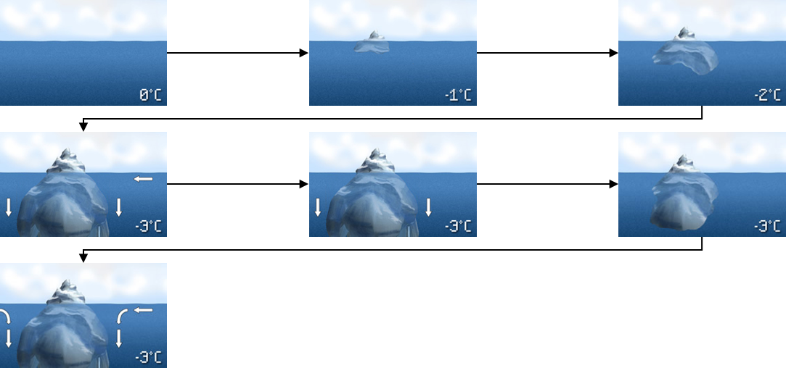

What is Ocean Variability?
“Winds drive ocean currents in the upper 100 meters of the ocean’s surface. However, ocean currents also flow thousands of meters below the surface. These deep-ocean currents are driven by differences in the water’s density, which is controlled by temperature (thermo) and salinity (haline). This process is known as the thermohaline circulation.
In the Earth’s polar regions ocean water gets very cold, forming sea ice. Consequently, the surrounding seawater gets saltier, because when the sea ice forms, the salt is left behind. As the seawater gets saltier, its density increases, and it starts to sink. Surface water is pulled in to replace the sinking water, which in turn eventually becomes cold and salty enough to sink. This initiates the deep-ocean currents driving the global conveyer belt.”

-NOAA (Source)